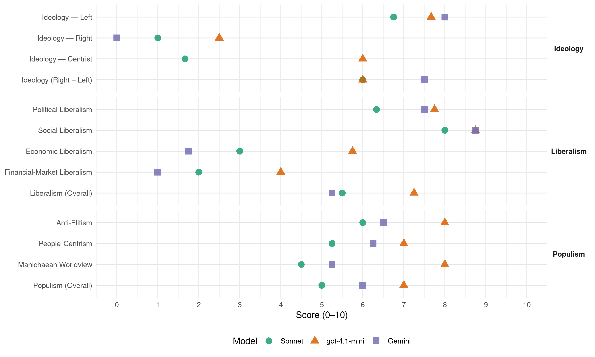

UP (Spain, 2015)
manifesto_id 33020_201512
Get full text: This site shows derived annotations and short verbatim quotes only. The full manifesto text is © Manifesto Project / WZB — obtain it via manifesto-project.wzb.eu using the manifesto_id above.
Headline scores
| Dimension | Sonnet | gpt-4.1-mini | Gemini |
|---|---|---|---|
| Populism (Overall) | 5.0 | 7.0 | 6.0 |
| Anti-Elitism | 6.0 | 8.0 | 6.5 |
| People-Centrism | 5.2 | 7.0 | 6.2 |
| Manichaean Worldview | 4.5 | 8.0 | 5.2 |
| Ideology (Right − Left) | 6.0 | 6.0 | 7.5 |
| Liberalism (Overall) | 5.5 | 7.2 | 5.2 |
| Political Liberalism | 6.3 | 7.8 | 7.5 |
| Social Liberalism | 8.0 | 8.8 | 8.8 |
| Economic Liberalism | 3.0 | 5.8 | 1.8 |
| Financial-Market Liberalism | 2.0 | 4.0 | 1.0 |
Evidence per dimension
Economic Liberalism
Gemini · score 1.0 · verified · chunk 1
“recuperación de la propiedad y gestión de los servicios”
Frente al continuado proceso de expolio de lo público, recuperación de la propiedad y gestión de los servicios y patrimonios públicos.
Gemini · score 1.0 · verified · chunk 2
“prohibición de las agencias de colocación privadas”
Potenciación de los servicios públicos de empleo y prohibición de las agencias de colocación privadas con ánimo de lucro.
Gemini · score 2.0 · verified · chunk 3
“imposición fiscal a las múltiples viviendas desocupadas”
Imposición fiscal a las múltiples viviendas desocupadas, progresiva en función del número
Gemini · score 3.0 · verified · chunk 4
“incentivos fiscales a las empresas”
fórmulas de empleo para sectores más desfavorecidos donde se incluyan a las/os inmigrantes, dando incentivos fiscales a las empresas que empleen
gpt-4.1-mini · score 7.0 · verified · chunk 1
“Plan para la potenciar la reindustrialización, con especial incidencia en las comarcas en declive”
Plan para la potenciar la reindustrialización, con especial incidencia en las comarcas en declive. Además de sectores exportadores, tener en cuenta modelos más locales, que eviten excesivo uso del transporte y que estén orientados a la satisfacción de los mercados más próximos.
gpt-4.1-mini · score 3.0 · verified · chunk 2
“Prohibición del fracking en todo el territorio incluidos los casos en los que las prospecciones ya han sido concedidas”
…Prohibición del fracking en todo el territorio incluidos los casos en los que las prospecciones ya han sido concedidas a empresas, hasta lograrlo, moratoria para nuevas licencias y prospecciones de “fracking”, petrolíferas y otras fuentes de energías fósiles. Se deben suspender los permisos de investigación o autorizaciones de exploración de hidrocarburos concedidos o en tramitación…
gpt-4.1-mini · score 7.0 · verified · chunk 3
“financiación suficiente de los Ayuntamientos para acabar con el uso de las recalificaciones de suelo”
Para abaratar el suelo, financiación suficiente de los Ayuntamientos para acabar con el uso de las recalificaciones de suelo para financiar los gastos corrientes y los servicios prestados.
gpt-4.1-mini · score 6.0 · verified · chunk 4
“incentivos fiscales a las empresas que empleen a personas de colectivos más vulnerables”
Impulsar fórmulas de empleo para sectores más desfavorecidos donde se incluyan a las/os inmigrantes, dando incentivos fiscales a las empresas que empleen a personas de colectivos más vulnerables.
Sonnet · score 2.0 · verified · chunk 1
“Economía para las personas, no para los mercados”
3.1.1. ECONOMÍA PARA LAS PERSONAS, NO PARA LOS MERCADOS. Garantizar la soberanía democrática sobre la economía para hacer frente a cualquier chantaje financiero
Sonnet · score 2.0 · verified · chunk 2
“Prohibición del fracking en todo el territorio”
Prohibición del fracking en todo el territorio incluidos los casos en los que las prospecciones ya han sido concedidas a empresas, hasta lograrlo, moratoria para nuevas licencias.
Sonnet · score 3.0 · verified · chunk 3
“Disolución de las SOCIMIS”
Disolución de las SOCIMIS (sociedades cotizadas de inversión en el mercado inmobiliario) que buscan la inversión de fondos extranjeros e institucionales en el mercado inmobiliario
Sonnet · score 5.0 · verified · chunk 4
“incentivos fiscales a las empresas que empleen”
dando incentivos fiscales a las empresas que empleen a personas de colectivos más vulnerables
Financial-Market Liberalism
Gemini · score 1.0 · verified · chunk 1
“control del sector financiero en defensa de depositantes”
Fortalecer el papel regulador del Banco de España con medidas para el control del sector financiero en defensa de depositantes y deudores.
Gemini · score 1.0 · verified · chunk 2
“Reducir de las ventajas fiscales de los planes privados”
mediante los Presupuestos Generales del Estado. Reducir de las ventajas fiscales de los planes privados de pensiones. Elevar la pensión mínima
Gemini · score 1.0 · verified · chunk 3
“reintroducción de una Banca Pública, que asuma”
La reintroducción de una Banca Pública, que asuma o coordine con entidades cooperativas
gpt-4.1-mini · score 6.0 · verified · chunk 1
“Promover la Tasa sobre las Transacciones Financieras y otras medidas contra los paraísos fiscales”
Promover la Tasa sobre las Transacciones Financieras y otras medidas contra los paraísos fiscales. Fortalecer el papel regulador del Banco de España con medidas para el control del sector financiero en defensa de depositantes y deudores.
gpt-4.1-mini · score 2.0 · verified · chunk 2
“Reducir de las ventajas fiscales de los planes privados de pensiones”
…Se aumentarán las pensiones públicas de acuerdo con el IPC anual. Se evitará el desmantelamiento del sistema de pensiones mediante la constante reducción y deducciones de cuotas. Por el contrario, se garantizará su suficiencia mediante los Presupuestos Generales del Estado. Reducir de las ventajas fiscales de los planes privados de pensiones.
Sonnet · score 2.0 · verified · chunk 1
“Creación de un Impuesto sobre las Transacciones Financieras”
Creación de un Impuesto sobre las Transacciones Financieras, que será sustituido, cuando proceda, por un tributo a escala de la Unión Europea
Sonnet · score 2.0 · verified · chunk 2
“sistema financiero oligárquico quiere participar”
El sistema financiero oligárquico quiere participar de las ingentes cantidades de millones que significaría acumular ahorro forzado. Nos vienen engañando desde hace decenios.
Sonnet · score 2.0 · verified · chunk 3
“Disolución de la SAREB”
Disolución de la SAREB. La constitución del llamado Banco Malo, que contiene casi 100.000 millones de euros en activos tóxicos (suelo y viviendas) comprados por el Estado
Political Liberalism
Gemini · score 8.0 · verified · chunk 1
“garantizar su independencia y la dotación de medios”
Justicia digna de su nombre es esencial para la democracia. Por tanto es necesario garantizar su independencia y la dotación de medios para una Justicia gratuita
Gemini · score 7.0 · verified · chunk 2
“asegurar una educación en igualdad y valores democráticos”
base de la cohesión social y debe asegurar una educación en igualdad y valores democráticos. El derecho a la Educación está siendo gravemente
Gemini · score 7.0 · verified · chunk 3
“garantizar de forma efectiva el uso del espacio”
Ley para garantizar de forma efectiva el uso del espacio radioeléctrico de forma equitativa
Gemini · score 8.0 · verified · chunk 4
“conceder los derechos políticos a los”
promover la adaptación de los textos legales para conceder los derechos políticos a los inmigrantes, empezando por el de sufragio
gpt-4.1-mini · score 8.0 · verified · chunk 1
“Garantizar los derechos sociales y servicios básicos en todo el estado”
Garantizar los derechos sociales y servicios básicos en todo el estado, estableciendo un nivel federal digno que deberá cumplirse por todas las federaciones, dejando vía libre a que las federaciones decidan democráticamente mejorar y/o destinar más recursos a estos apartados.
gpt-4.1-mini · score 8.0 · verified · chunk 2
“la participación democrática de la comunidad y de los agentes educativos”
…Fomentaremos la participación democrática de la comunidad y de los agentes educativos tanto en la elaboración de las reformas, como en la gestión de los Centros públicos de Enseñanza obligatoria y superior.
gpt-4.1-mini · score 8.0 · verified · chunk 3
“garantizar su acceso como un derecho fundamental”
Inclusión de los Servicios Sociales en el articulado de la Constitución para garantizar su acceso como un derecho fundamental. Establecimiento de mecanismos de control del Pacto Internacional de Derechos Economicos, Sociales y Culturales (PIDESC) y del artículo 5 del Pacto Internacional de Derechos Civiles y Políticos.
gpt-4.1-mini · score 7.0 · verified · chunk 4
“Cumplimiento por parte de España de la Convención Internacional sobre protección de los trabajadores migratorios”
Cumplimiento por parte de España de la Convención Internacional sobre protección de los trabajadores migratorios y sus familias. Cumplimiento del Convenio sobre el Trabajo Decente de la OIT sobre trabajo doméstico.
Sonnet · score 5.0 · mixed · chunk 1
“democracia auténtica y participativa”
un Estado con democracia auténtica y participativa como expresión de la soberanía popular donde el punto de partida de la toma de decisiones de todos los temas radique en el ciudadano
Sonnet · score 5.0 · verified · chunk 2
“valores democráticos”
La Escuela Pública es la base de la cohesión social y debe asegurar una educación en igualdad y valores democráticos.
Sonnet · score 7.0 · verified · chunk 3
“Democratizar los medios públicos”
El propósito inmediato es pasar de unos medios públicos al servicio de los partidos gobernantes y de los grupos de poder económico, a unos medios al servicio de la ciudadanía. Democratizar los medios públicos
Sonnet · score 7.0 · verified · chunk 4
“derechos políticos a los inmigrantes”
promover la adaptación de los textos legales para conceder los derechos políticos a los inmigrantes, empezando por el de sufragio activo y pasivo
Liberalism (Overall)
Gemini · score 5.0 · verified · chunk 1
“garantizar su independencia y la dotación de medios”
Justicia digna de su nombre es esencial para la democracia. Por tanto es necesario garantizar su independencia y la dotación de medios para una Justicia gratuita
Gemini · score 4.0 · verified · chunk 2
“prohibición de las agencias de colocación privadas”
Potenciación de los servicios públicos de empleo y prohibición de las agencias de colocación privadas con ánimo de lucro.
Gemini · score 5.0 · verified · chunk 3
“igualdad en la diversidad es una exigencia”
La igualdad en la diversidad es una exigencia de nuestro tiempo y un compromiso político
Gemini · score 7.0 · verified · chunk 4
“conceder los derechos políticos a los”
promover la adaptación de los textos legales para conceder los derechos políticos a los inmigrantes, empezando por el de sufragio
gpt-4.1-mini · score 8.0 · verified · chunk 1
“Garantizar los derechos sociales y servicios básicos en todo el estado”
Garantizar los derechos sociales y servicios básicos en todo el estado, estableciendo un nivel federal digno que deberá cumplirse por todas las federaciones, dejando vía libre a que las federaciones decidan democráticamente mejorar y/o destinar más recursos a estos apartados.
gpt-4.1-mini · score 6.0 · verified · chunk 2
“la participación democrática de la comunidad y de los agentes educativos”
…Fomentaremos la participación democrática de la comunidad y de los agentes educativos tanto en la elaboración de las reformas, como en la gestión de los Centros públicos de Enseñanza obligatoria y superior.
gpt-4.1-mini · score 8.0 · verified · chunk 3
“garantizar su acceso como un derecho fundamental”
Inclusión de los Servicios Sociales en el articulado de la Constitución para garantizar su acceso como un derecho fundamental. Establecimiento de mecanismos de control del Pacto Internacional de Derechos Economicos, Sociales y Culturales (PIDESC) y del artículo 5 del Pacto Internacional de Derechos Civiles y Políticos.
gpt-4.1-mini · score 7.0 · verified · chunk 4
“Cumplimiento por parte de España de la Convención Internacional sobre protección de los trabajadores migratorios”
Cumplimiento por parte de España de la Convención Internacional sobre protección de los trabajadores migratorios y sus familias. Cumplimiento del Convenio sobre el Trabajo Decente de la OIT sobre trabajo doméstico.
Sonnet · score 4.0 · mixed · chunk 1
“Garantizar la soberanía democrática sobre la economía”
Garantizar la soberanía democrática sobre la economía para hacer frente a cualquier chantaje financiero que impida poner en marcha políticas equitativas de distribución de la riqueza
Sonnet · score 4.0 · verified · chunk 2
“Acabar con la brecha salarial”
Acabar con la brecha salarial y con la precarización de los sectores más feminizados, trabajar por la corresponsabilidad en los cuidados, que es realizado mayoritariamente por mujeres.
Sonnet · score 5.0 · mixed · chunk 3
“igualdad entre las mujeres y los hombres y las personas LGTB”
para logar mejores resultados y avanzar en la igualdad entre las mujeres y los hombres y las personas LGTB. 5.1.1. POLÍTICAS INSTITUCIONALES
Sonnet · score 7.0 · verified · chunk 4
“derechos políticos a los inmigrantes”
promover la adaptación de los textos legales para conceder los derechos políticos a los inmigrantes, empezando por el de sufragio activo y pasivo
Anti-Elitism
Gemini · score 9.0 · verified · chunk 1
“servilmente los gobiernos del PSOE y el PP”
grandes corporaciones transnacionales, y que vienen aplicando servilmente los gobiernos del PSOE y el PP: políticas de miseria
Gemini · score 7.0 · verified · chunk 2
“El sistema financiero oligárquico quiere participar”
ocuparse de pagar las pensiones. El sistema financiero oligárquico quiere participar de las ingentes cantidades de millones
Gemini · score 6.0 · verified · chunk 3
“los poderosos nos reservan en su reparto”
competidor por las migajas que los poderosos nos reservan en su reparto del pastel.
Gemini · score 4.0 · verified · chunk 4
“que los poderosos nos reservan”
como si fuera un competidor por las migajas que los poderosos nos reservan en su reparto del pastel.
gpt-4.1-mini · score 9.0 · verified · chunk 1
“los poderes dominantes de la Unión Europea, el capitalismo financiero, la banca privada y las grandes corporaciones transnacionales”
Son las mayorías castigadas por las políticas impuestas por los poderes dominantes de la Unión Europea, el capitalismo financiero, la banca privada y las grandes corporaciones transnacionales, y que vienen aplicando servilmente los gobiernos del PSOE y el PP: políticas de miseria y de drástica limitación de derechos laborales y sociales básicos, y de las libertades democráticas.
gpt-4.1-mini · score 7.0 · verified · chunk 2
“la retribución del trabajo se reduzca más mientras crece la del capital”
…miedo a esa misma crisis sirve como excusa para el recorte de nuestros derechos laborales. Este círculo vicioso facilita a su vez que la retribución del trabajo se reduzca más mientras crece la del capital. Pero podemos romperlo con una política de empleo que priorice la dignidad del trabajo…
Sonnet · score 9.0 · verified · chunk 1
“el capitalismo financiero, la banca privada y las grandes corporaciones transnacionales”
Son las mayorías castigadas por las políticas impuestas por los poderes dominantes de la Unión Europea, el capitalismo financiero, la banca privada y las grandes corporaciones transnacionales, y que vienen aplicando servilmente los gobiernos del PSOE y el PP
Sonnet · score 5.0 · mixed · chunk 2
“El sistema financiero oligárquico quiere participar”
Nos vienen engañando desde hace decenios con que el sistema no es viable… El sistema financiero oligárquico quiere participar de las ingentes cantidades de millones que significaría acumular ahorro forzado.
Sonnet · score 5.0 · verified · chunk 3
“los poderosos nos reservan en su reparto del pastel”
culpabilizar al extranjero como si fuera un competidor por las migajas que los poderosos nos reservan en su reparto del pastel. Nos comprometemos
Sonnet · score 4.0 · verified · chunk 4
“las migajas que los poderosos nos reservan”
culpabilizar al extranjero como si fuera un competidor por las migajas que los poderosos nos reservan en su reparto del pastel
Ideology — Centrist
gpt-4.1-mini · score 6.0 · verified · chunk 1
“la soberanía popular de los dictados de los poderosos”
La liberación de la soberanía popular de los dictados de los poderosos a los que sirven las políticas de austeridad de la UE y el Banco Mundial.
gpt-4.1-mini · score 5.0 · verified · chunk 2
“la democracia económica, entre en las empresas y que las trabajadoras y trabajadores tengan un nivel de participación destacado”
…Defendemos que la democracia económica, entre en las empresas y que las trabajadoras y trabajadores tengan un nivel de participación destacado en la toma de decisiones tanto en el sector público como en el privado. Hoy, la auténtica prioridad en la lucha contra el desempleo.
gpt-4.1-mini · score 7.0 · verified · chunk 4
“Eliminar el discurso institucional de criminalización de la inmigración que fomenta el racismo”
Nos comprometemos, por el contrario, a las siguientes políticas: Eliminar el discurso institucional de criminalización de la inmigración que fomenta el racismo. Ninguna persona será criminalizada por su situación migratoria, la condición migratoria no constituye un delito.
Sonnet · score 1.0 · verified · chunk 1
“consenso sobre objetivos comunes”
Este Programa busca el consenso sobre objetivos comunes, basados en el sentido del momento histórico que vivimos en España, en Europa y en el Mundo
Sonnet · score 2.0 · verified · chunk 3
“programa hecho participativamente por y para las personas”
El programa de Unidad Popular es un programa hecho participativamente por y para las personas. El objetivo perseguido por esta formación es la búsqueda del máximo bienestar
Sonnet · score 2.0 · verified · chunk 4
“Los derechos humanos son universales”
Los derechos humanos son universales y las migraciones han sido siempre y son un fenómeno consustancial al ser humano
Ideology — Left
Gemini · score 10.0 · verified · chunk 1
“claramente de izquierdas, ecologista y feminista”
La necesidad de una plataforma de movilización social claramente de izquierdas, ecologista y feminista, y, en relación con ella
Gemini · score 8.0 · verified · chunk 2
“retribución del trabajo se reduzca más mientras crece la del capital”
miedo a esa misma crisis sirve como excusa para el recorte de nuestros derechos laborales. Este círculo vicioso facilita a su vez que la retribución del trabajo se reduzca más mientras crece la del capital. Pero podemos romperlo con una política de empleo
Gemini · score 8.0 · verified · chunk 3
“sociedad de clara orientación socialista y anti-patriarcal”
Unidad Popular pretende ir construyendo una sociedad de clara orientación socialista y anti-patriarcal en la que
Gemini · score 6.0 · verified · chunk 4
“explotación de personas y recursos”
los países llamados desarrollados, lo son también a causa de la explotación de personas y recursos de otros
gpt-4.1-mini · score 9.0 · verified · chunk 1
“la unidad popular de las clases trabajadoras y populares”
La necesidad de una plataforma de movilización social claramente de izquierdas, ecologista y feminista, y, en relación con ella, de una candidatura electoral unitaria de las clases trabajadoras y populares, que forman la gran mayoría social, es una convicción profunda de muchos miles de hombres y mujeres progresistas en todo el país.
gpt-4.1-mini · score 8.0 · verified · chunk 2
“Derogación de las reformas laborales del PSOE y del PP”
…3.4.1. DEROGAR LAS REFORMAS LABORALES DEL PSOE Y DEL PP E INICIAR UN PROCESO DE NEGOCIACIÓN CON SINDICATOS Y PATRONAL PARA LA MODIFICACIÓN DEL ESTATUTO DE LOS TRABAJADORES Garantizar y proteger el derecho de Huelga Derogación del art. 315.3 y 558 del Código Penal para evitar la criminalización del ejercicio del derecho de huelga y la acción sindical…
gpt-4.1-mini · score 6.0 · verified · chunk 4
“lucha contra la economía sumergida, contra la explotación laboral y la trata de seres humanos”
Los colectivos emigrantes serían directamente beneficiados de las medidas planteadas en este programa sobre lucha contra la economía sumergida, contra la explotación laboral y la trata de seres humanos. Todo ello con un enfoque de apoyo a las víctimas o potenciación de los servicios públicos y sociales.
Sonnet · score 9.0 · verified · chunk 1
“plataforma de movilización social claramente de izquierdas”
La necesidad de una plataforma de movilización social claramente de izquierdas, ecologista y feminista, y, en relación con ella, de una candidatura electoral unitaria de las clases trabajadoras y populares
Sonnet · score 6.0 · verified · chunk 2
“democracia económica, entre en las empresas”
Defendemos que la democracia económica, entre en las empresas y que las trabajadoras y trabajadores tengan un nivel de participación destacado en la toma de decisiones.
Sonnet · score 7.0 · verified · chunk 3
“reintroducción de una Banca Pública”
La reintroducción de una Banca Pública, que asuma o coordine con entidades cooperativas de crédito la antigua función social de las Cajas de Ahorro
Sonnet · score 5.0 · verified · chunk 4
“explotación de personas y recursos de otros”
Los países llamados desarrollados, lo son también a causa de la explotación de personas y recursos de otros y no tienen derecho a negarse
Ideology (Right − Left)
Gemini · score 9.0 · verified · chunk 1
“claramente de izquierdas, ecologista y feminista”
La necesidad de una plataforma de movilización social claramente de izquierdas, ecologista y feminista, y, en relación con ella
Gemini · score 8.0 · verified · chunk 2
“retribución del trabajo se reduzca más mientras crece la del capital”
miedo a esa misma crisis sirve como excusa para el recorte de nuestros derechos laborales. Este círculo vicioso facilita a su vez que la retribución del trabajo se reduzca más mientras crece la del capital. Pero podemos romperlo con una política de empleo
Gemini · score 8.0 · verified · chunk 3
“sociedad de clara orientación socialista y anti-patriarcal”
Unidad Popular pretende ir construyendo una sociedad de clara orientación socialista y anti-patriarcal en la que
Gemini · score 5.0 · verified · chunk 4
“explotación de personas y recursos”
los países llamados desarrollados, lo son también a causa de la explotación de personas y recursos de otros
gpt-4.1-mini · score 7.0 · verified · chunk 1
“la unidad popular es una iniciativa estratégica fundamental para el cambio histórico”
Más allá del horizonte electoral, la Unidad Popular es una iniciativa estratégica fundamental para el cambio histórico que queremos favorecer, recogiendo todas las tradiciones de izquierdas y progresistas de libertad, igualdad y reparto de la riqueza, al abrir posibilidades de desarrollo social hoy bloqueadas por un sistema capitalista que agudiza día a día los gravísimos problemas sociales y ecológicos que padecemos.
gpt-4.1-mini · score 6.0 · verified · chunk 2
“Derogación de las reformas laborales del PSOE y del PP”
…3.4.1. DEROGAR LAS REFORMAS LABORALES DEL PSOE Y DEL PP E INICIAR UN PROCESO DE NEGOCIACIÓN CON SINDICATOS Y PATRONAL PARA LA MODIFICACIÓN DEL ESTATUTO DE LOS TRABAJADORES Garantizar y proteger el derecho de Huelga Derogación del art. 315.3 y 558 del Código Penal para evitar la criminalización del ejercicio del derecho de huelga y la acción sindical…
gpt-4.1-mini · score 5.0 · verified · chunk 4
“Eliminar el discurso institucional de criminalización de la inmigración que fomenta el racismo”
Nos comprometemos, por el contrario, a las siguientes políticas: Eliminar el discurso institucional de criminalización de la inmigración que fomenta el racismo. Ninguna persona será criminalizada por su situación migratoria, la condición migratoria no constituye un delito.
Sonnet · score 9.0 · verified · chunk 1
“netamente de izquierdas, desde las luchas de las clases”
abierto e inclusivo, netamente de izquierdas, desde las luchas de las clases y capas populares que sufren esta inacabable crisis-estafa
Sonnet · score 5.0 · verified · chunk 2
“democracia económica, entre en las empresas”
Defendemos que la democracia económica, entre en las empresas y que las trabajadoras y trabajadores tengan un nivel de participación destacado en la toma de decisiones.
Sonnet · score 6.0 · verified · chunk 3
“reintroducción de una Banca Pública”
La reintroducción de una Banca Pública, que asuma o coordine con entidades cooperativas de crédito la antigua función social de las Cajas de Ahorro
Sonnet · score 4.0 · verified · chunk 4
“explotación de personas y recursos de otros”
Los países llamados desarrollados, lo son también a causa de la explotación de personas y recursos de otros y no tienen derecho a negarse
Ideology — Right
Gemini · score 0.0 · verified · chunk 1
“derecho a la libre circulación de las personas”
Libre circulación de personas Reconocer el derecho a la libre circulación de las personas entre fronteras y la completa garantía
Gemini · score 0.0 · verified · chunk 3
“enfrentarnos con firmeza contra la xenofobia”
épocas de crisis económica en la que debemos enfrentarnos con firmeza contra la xenofobia.
Gemini · score 0.0 · verified · chunk 4
“Eliminar el discurso institucional de criminalización”
Nos comprometemos, por el contrario, a las siguientes políticas: Eliminar el discurso institucional de criminalización de la inmigración
gpt-4.1-mini · score 2.0 · verified · chunk 1
“defensa firme de la paz y la solidaridad entre los pueblos del Mundo”
La defensa firme de la paz y la solidaridad entre los pueblos del Mundo, des-ligándonos completamente de las guerras de re-colonización promovidas por los EE.UU. y sus aliados a fin de imponer su control y salvaguardar sus intereses económicos, en las que irresponsablemente nos implican los dirigentes del bipartidismo.
gpt-4.1-mini · score 3.0 · verified · chunk 4
“se agudizan las presiones xenófobas y la incitación a culpabilizar al extranjero”
Respecto a quienes ya comparten nuestras vidas, se agudizan las presiones xenófobas y la incitación a culpabilizar al extranjero como si fuera un competidor por las migajas que los poderosos nos reservan en su reparto del pastel.
Sonnet · score 1.0 · verified · chunk 1
“Libre circulación de personas”
Libre circulación de personas. Reconocer el derecho a la libre circulación de las personas entre fronteras y la completa garantía del derecho de refugio y asilo
Sonnet · score 1.0 · verified · chunk 3
“Denunciamos las restricciones que, con cualquier excusa”
Denunciamos las restricciones que, con cualquier excusa, se aplican en Europa y en nuestro país al tránsito de las personas.
Sonnet · score 1.0 · verified · chunk 4
“Denunciamos las restricciones que”
Denunciamos las restricciones que, con cualquier excusa, se aplican en Europa y en nuestro país al tránsito de las personas
Manichaean Worldview
Gemini · score 8.0 · verified · chunk 1
“esta inacabable crisis-estafa”
desde las luchas de las clases y capas populares que sufren esta inacabable crisis-estafa, y se dirige a las grandes mayorías
Gemini · score 6.0 · verified · chunk 2
“Nos vienen engañando desde hace decenios”
de las ingentes cantidades de millones que significaría acumular ahorro forzado. Nos vienen engañando desde hace decenios con que el sistema no es viable
Gemini · score 4.0 · verified · chunk 3
“especulan con un bien de primera necesidad”
privilegio inaceptable para los grandes grupos económicos que especulan con un bien de primera necesidad como es la vivienda.
Gemini · score 3.0 · verified · chunk 4
“en su reparto del pastel”
por las migajas que los poderosos nos reservan en su reparto del pastel. Nos comprometemos, por el contrario
gpt-4.1-mini · score 8.0 · verified · chunk 1
“defraudar la voluntad del pueblo es entregarla a falsos defensores que son en realidad, como nos muestra la historia, sus más crueles enemigos”
Porque defraudar la voluntad del pueblo es entregarla a falsos defensores que son en realidad, como nos muestra la historia, sus más crueles enemigos. Más allá del horizonte electoral, la Unidad Popular es una iniciativa estratégica fundamental para el cambio histórico que queremos favorecer, recogiendo todas las tradiciones de izquierdas y progresistas de libertad, igualdad y reparto de la riqueza, al abrir posibilidades de desarrollo social hoy bloqueadas por un sistema capitalista que agudiza día a día los gravísimos problemas sociales y ecológicos que padecemos.
gpt-4.1-mini · score 5.0 · mixed · chunk 2
“el sistema financiero oligárquico quiere participar de las ingentes cantidades de millones”
…Pero todos hemos trabajado para ella, y no se puede despreciar a quienes han sufrido el trabajo en condiciones ilegales/sin cotización, o a quienes no han tenido trabajo asalariado, como es el caso de millones de mujeres. Por eso tenemos que defender el sistema financiero oligárquico quiere participar de las ingentes cantidades de millones que significaría acumular ahorro forzado. Nos vienen engañando desde hace decenios con que el sistema no es viable…
Sonnet · score 8.0 · verified · chunk 1
“crisis-estafa”
desde las luchas de las clases y capas populares que sufren esta inacabable crisis-estafa, y se dirige a las grandes mayorías sociales
Sonnet · score 4.0 · verified · chunk 2
“Nos vienen engañando desde hace decenios”
El sistema financiero oligárquico quiere participar de las ingentes cantidades de millones… Nos vienen engañando desde hace decenios con que el sistema no es viable.
Sonnet · score 3.0 · verified · chunk 3
“transferir deuda privada al sector público”
supone transferir deuda privada al sector público, directamente o avalada con préstamos con alto riesgo de ser fallidos, por lo que los perjudicados serán los contribuyentes
Sonnet · score 3.0 · verified · chunk 4
“los poderosos nos reservan en su reparto”
culpabilizar al extranjero como si fuera un competidor por las migajas que los poderosos nos reservan en su reparto del pastel
People-Centrism
Gemini · score 9.0 · verified · chunk 1
“candidatura electoral unitaria de las clases trabajadoras y populares”
movilización social claramente de izquierdas, ecologista y feminista, y, en relación con ella, de una candidatura electoral unitaria de las clases trabajadoras y populares, que forman la gran mayoría social
Gemini · score 6.0 · verified · chunk 2
“estén al servicio de la ciudadanía”
legislativo para que la electricidad, su producción, distribución y comercialización estén al servicio de la ciudadanía y posea un carácter social.
Gemini · score 5.0 · verified · chunk 3
“hecho participativamente por y para las personas”
El programa de Unidad Popular es un programa hecho participativamente por y para las personas.
Gemini · score 5.0 · verified · chunk 4
“demanda de Unidad Popular actitudes”
por el que atraviesa la sociedad española demanda de Unidad Popular actitudes valientes y clarificadoras
gpt-4.1-mini · score 8.0 · verified · chunk 1
“la unidad popular es el instrumento”
La ruptura con un sistema basado en el expolio y la depredación es el objetivo, la unidad popular es el instrumento. Un sistema, que está hurtando los logros y las conquistas de las clases populares, así como expoliando sus derechos y privatizando lo público, que es de todas y todos.
gpt-4.1-mini · score 6.0 · verified · chunk 2
“la democracia económica, entre en las empresas y que las trabajadoras y trabajadores tengan un nivel de participación destacado”
…Defendemos que la democracia económica, entre en las empresas y que las trabajadoras y trabajadores tengan un nivel de participación destacado en la toma de decisiones tanto en el sector público como en el privado. Hoy, la auténtica prioridad en la lucha contra el desempleo.
Sonnet · score 9.0 · verified · chunk 1
“las grandes mayorías sociales que necesitan la transformación”
se dirige a las grandes mayorías sociales que necesitan la transformación hacia una sociedad verdaderamente justa, fraterna, de mujeres y hombres libres e iguales
Sonnet · score 5.0 · verified · chunk 2
“electricidad… al servicio de la ciudadanía”
Cambiar el marco legislativo para que la electricidad, su producción, distribución y comercialización estén al servicio de la ciudadanía y posea un carácter social.
Sonnet · score 4.0 · verified · chunk 3
“programa hecho participativamente por y para las personas”
El programa de Unidad Popular es un programa hecho participativamente por y para las personas. El objetivo perseguido por esta formación es la búsqueda del máximo bienestar
Sonnet · score 3.0 · verified · chunk 4
“quienes ya comparten nuestras vidas”
Respecto a quienes ya comparten nuestras vidas, se agudizan las presiones xenófobas y la incitación a culpabilizar al extranjero
Populism (Overall)
Gemini · score 9.0 · verified · chunk 1
“La liberación de la soberanía popular de los dictados de los poderosos”
sentido del momento histórico que vivimos en España, en Europa y en el Mundo: La liberación de la soberanía popular de los dictados de los poderosos a los que sirven las políticas
Gemini · score 6.0 · verified · chunk 2
“El sistema financiero oligárquico quiere participar”
ocuparse de pagar las pensiones. El sistema financiero oligárquico quiere participar de las ingentes cantidades de millones
Gemini · score 5.0 · verified · chunk 3
“los poderosos nos reservan en su reparto”
competidor por las migajas que los poderosos nos reservan en su reparto del pastel.
Gemini · score 4.0 · verified · chunk 4
“que los poderosos nos reservan”
como si fuera un competidor por las migajas que los poderosos nos reservan en su reparto del pastel.
gpt-4.1-mini · score 8.0 · verified · chunk 1
“los poderes dominantes de la Unión Europea, el capitalismo financiero, la banca privada y las grandes corporaciones transnacionales”
Son las mayorías castigadas por las políticas impuestas por los poderes dominantes de la Unión Europea, el capitalismo financiero, la banca privada y las grandes corporaciones transnacionales, y que vienen aplicando servilmente los gobiernos del PSOE y el PP: políticas de miseria y de drástica limitación de derechos laborales y sociales básicos, y de las libertades democráticas.
gpt-4.1-mini · score 6.0 · verified · chunk 2
“la retribución del trabajo se reduzca más mientras crece la del capital”
…miedo a esa misma crisis sirve como excusa para el recorte de nuestros derechos laborales. Este círculo vicioso facilita a su vez que la retribución del trabajo se reduzca más mientras crece la del capital. Pero podemos romperlo con una política de empleo que priorice la dignidad del trabajo…
Sonnet · score 9.0 · verified · chunk 1
“La ruptura con un sistema basado en el expolio”
La ruptura con un sistema basado en el expolio y la depredación es el objetivo, la unidad popular es el instrumento
Sonnet · score 4.0 · verified · chunk 2
“El sistema financiero oligárquico quiere participar”
Nos vienen engañando desde hace decenios con que el sistema no es viable… El sistema financiero oligárquico quiere participar de las ingentes cantidades de millones.
Sonnet · score 4.0 · verified · chunk 3
“los poderosos nos reservan en su reparto del pastel”
culpabilizar al extranjero como si fuera un competidor por las migajas que los poderosos nos reservan en su reparto del pastel. Nos comprometemos
Sonnet · score 3.0 · verified · chunk 4
“las migajas que los poderosos nos reservan”
culpabilizar al extranjero como si fuera un competidor por las migajas que los poderosos nos reservan en su reparto del pastel
Social Liberalism